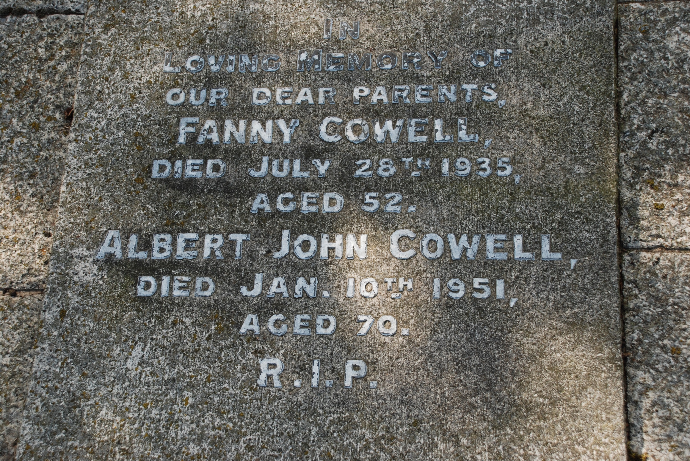
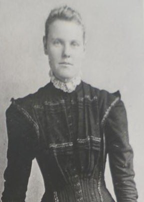
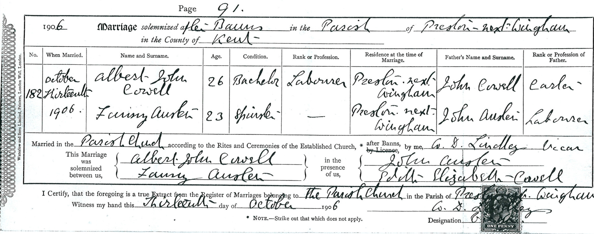
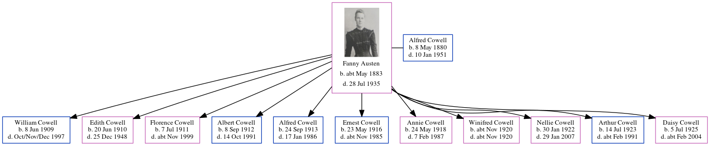

Fanny Cowell (née Austen) cMay 1883 - 1935
[ Home ] | [ Calendar ] | [ Surnames Index ] | [ Errors ] | [ Family History ]Fanny Austen, the wife of Alfred John Cowell (the great-uncle of Nigel Horne), was born in Canterbury, Kent, England c. May 18831,2,3,4,5,6,7,8 and married Alfred (a transport driver with whom she had 11 children: William John, Edith Mary, Florence Emily, Albert Edward, Alfred, Ernest James, Annie, Winifred E, Nellie, Arthur Thomas and Daisy Ethel) at St Mildred's Church, Preston, Wingham, Kent, England on 13 Oct 190610 (St Mildreds).
During her life, she was living in Preston, Kent, England in 18911; at her birthplace in 19012; in Elmstone, Stourmouth, Kent on 2 Apr 19113; and at Durlock Farm Cottages, Minster, Thanet, Kent on 19 Jun 19214.
She died on 28 Jul 1935 in Thanet, Kent, England6,9 and was buried on Minster Cemetery, Tothill Street, Minster in Thanet in Aug 1935.
Children
- William John was born on 8 Jun 1909
- Edith Mary was born on 20 Jun 1910
- Florence Emily was born on 7 Jul 1911
- Albert Edward was born on 8 Sept 1912
- Alfred was born on 24 Sept 1913
- Ernest James was born on 23 May 1916
- Annie was born on 24 May 1918
- Winifred E was born c. Nov 1920
- Nellie was born on 30 Jan 1922
- Arthur Thomas was born on 14 Jul 1923
- Daisy Ethel was born on 5 Jul 1925
Citations
- 1891 England Census Online publication - Provo, UT, USA: The Generations Network, Inc., 2005.Original data - Census Returns of England and Wales, 1891. Kew, Surrey, England: The National Archives of the UK (TNA): Public Record Office (PRO), 1891. Data imaged from The National
- 1901 England Census Online publication - Provo, UT, USA: The Generations Network, Inc., 2005.Original data - Census Returns of England and Wales, 1901. Kew, Surrey, England: The National Archives of the UK (TNA): Public Record Office (PRO), 1901. Data imaged from the National
- 1911 England Census Online publication - Provo, UT, USA: Ancestry.com Operations, Inc., 2011.Original data - Census Returns of England and Wales, 1911. Kew, Surrey, England: The National Archives of the UK (TNA), 1911. Data imaged from the National Archives, London, England.
- 1921 Census Of England & Wales - Findmypast (was age 38 and the wife of the head of the household)
- England & Wales births 1837-2006 - Findmypast
- England & Wales deaths 1837-2007 - Findmypast
- England & Wales, FreeBMD Birth Index, 1837-1915 Online publication - Provo, UT, USA: The Generations Network, Inc., 2006.Original data - General Register Office. England and Wales Civil Registration Indexes. London, England: General Register Office. © Crown copyright. Published by permission of the Cont
- Kent Marriages And Banns - Findmypast
- England & Wales, Death Index: 1984-2005 Online publication - Provo, UT, USA: The Generations Network, Inc., 2007.Original data - General Register Office. England and Wales Civil Registration Indexes. London, England: General Register Office. © Crown copyright. Published by permission of the Cont
- Kent, Canterbury Archdeaconry marriages 1538-1928 - Findmypast
- 1911 Census for England & Wales - Findmypast (was age 28 and the wife of the head of the household)
Media
Albert John Cowell - Fanny Austen

Double Wedding

Fanny Austen

Albert Cowell - Fanny Austen - marriage certificate

1911 England, Wales & Scotland Census Transcription - GBC-1911-RG14-04559-0401-3
1911 Census for England & Wales - GBC/1911/RG14/04559/0401/2
Canterbury Marriages - GBPRS/CANT/M/97051089/2
England & Wales marriages 1837-2008 - BMD/M/1906/4/AZ/000014/013
England & Wales deaths 1837-2007 - BMD/D/1935/3/AZ/000162/021
England & Wales births 1837-2006 - BMD/B/1883/2/AZ/000020/306
Family Tree
Map
Generated by ged2site. Last updated on Jul 3, 2024
Known Issues
Burial date (Aug 1935) has no citations
Apr 2, 1911: not living at same address as spouse Alfred Cowell ('Elmstone, Stourmouth, Kent, England'/'Brewery Cottages, Upper Stourmouth, Kent, England')
No records of living with anyone